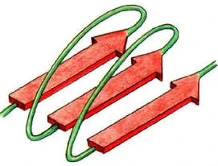

1 · 藤蔓穿箭
直接致敬参考图：一条绿色藤蔓起伏穿过三支并列上升的橙色箭，在 1、3 号箭上方掠过、从 2 号箭下方钻过。箭是句子主谓宾的推进，藤蔓是 Bio 的生命力。元素最多、信息最足，适合做启动图与宣传图；缩到 16px 会糊。
design/logo/biocn-logo-1-vine-coil.svg

参考图：绿色藤蔓缠绕三支上升的红色箭头。它的两个颜色恰好就是 BioCN 主谓宾三色里的谓语绿 #1b9e77 与主语橙 #d95f02——以下六个方案都从这张图出发， 把「藤蔓 / 上升 / 编织」翻译成几何的 logo 语言。
选定方案 2 并按要求完成两个版本：去掉箭头、链身放大占满画布的静态标记，
以及启动页动画版。下方保留其余五个方向作为档案。每张卡片左浅右暗——
主谓宾三色来自 src/index.css，明暗两版都不需要换色。
#d95f02
谓语#1b9e77
宾语#7570b3
design/logo/biocn-helix-launch.svg（纯 CSS，无 JS，透明背景，
遵循 prefers-reduced-motion）直接致敬参考图：一条绿色藤蔓起伏穿过三支并列上升的橙色箭，在 1、3 号箭上方掠过、从 2 号箭下方钻过。箭是句子主谓宾的推进，藤蔓是 Bio 的生命力。元素最多、信息最足，适合做启动图与宣传图；缩到 16px 会糊。
把「Bio」与「句子」拧成一条双螺旋：绿链（谓语）与橙链（主语）相互缠绕，紫色横档（宾语）在每一层把两者连成梯。已按要求去掉箭头，链身放大到占满画布，顶端自然张开收尾。
一页书的文本行，三行被主谓宾三色点亮——正是应用里的样子。绿色那一行不肯停在行内，翘起末端卷成卷须、长出一片叶子：阅读让文本活过来。明暗两版皆清晰，缩到 16px 仍可辨认。
一句话被抽象成一条上升的路径：橙圆是主语，绿圆是谓语——依存句法的根，所以它最大，且绿色的路径由它驱动；紫圆是宾语，箭头指向下一段阅读。最简的方案，任何尺寸都不糊，也适合做水印。
BioCN 的首字母 B 做成极简几何字：绿色的茎向上长出一片叶、向下扎进土里，橙色的两只碗是 B 的轮廓。字母与植物一次说清，横竖空间都省——适合方形图标与头像。
一片叶子，由一行行文本剪裁而成，其中三行被主谓宾三色点亮——像应用里散落在灰色正文中的彩色词语。书页的文字长成叶子，是最贴合「BioCN」二字的隐喻；细节丰富，适合大尺寸展示。